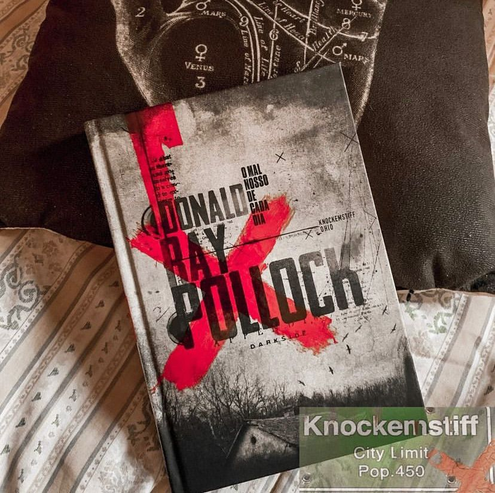

O Mal Nosso de Cada Dia
(Donald Ray Pollock - Darkside)
⭐⭐⭐⭐
⚠️Gatilhos: Violência, Abuso e assassinatos.
Violência, incômodo e instintos mais primitivos fazem isso arte da obra de Pollock.
A trama se passa em uma cidadezinha no interior de Ohio entre 1945 e 1960, onde moram os personagens perturbados criados pelo autor. Vamos conhecer a família Russel, onde esposa de Willard Russell e mãe de Arvin está à beira da morte, não importa o quanto ele beba, reze ou faça sacrifícios e oferendas.
Com o passar do tempo, Arvin uma criança que foi totalmente negligenciada se torna um assassino frio e cruel. Em torno deles, circula um nefasto e peculiar grupo de moradores ― um insano casal de assassinos em série, um pastor que come aranhas e um xerife corrupto ―, todos entrelaçados numa viciante narrativa da mais corajosa e sombria lavra americana. A escória da sociedade.
Violência é o que não falta, é uma obra pesada, incômoda por isso, não é recomendada para leitores sensíveis. As cenas de violência são bem narradas e detalhistas.
Os personagens bem construídos, com perfeito desenvolvimento e humanos, você vai gostar ou desprezar cada atitude questionável. A forma narrativa ajuda com que não haja uma glamourização da violência e tudo é muito palpável, real.
A narrativa vai tratar a respeito dos demônios internos que todos, uma hora ou outra vamos ter que encarar. Fala sobre escolhas e em muitos pontos da trama somos pegos nos questionando, sobre nossas questões pessoais.
Uma adaptação baseada na obra está disponível pela Netflix e o título é: “O Diabo de Cada Dia” e vale a pena dar uma conferida.